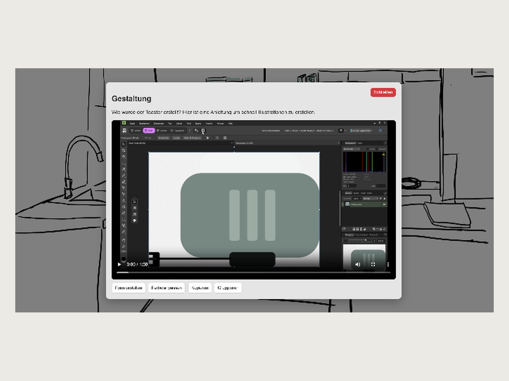
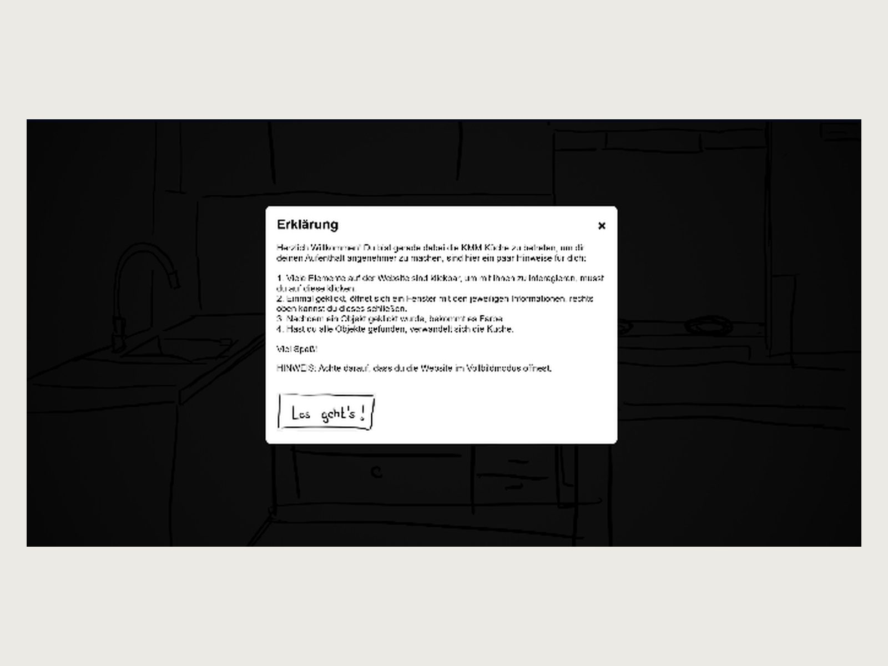

KMM Küche
Ein Studienhandbuch, das man durchstöbert statt durchblättert – der Studiengang als begehbare Küche.
- Kontext
- Semesterprojekt Multimedia
- Rolle
- Konzept, Illustration, UI-Design, Frontend
- Werkzeuge
- HTML, CSS, JavaScript, Blender, DaVinci Resolve, Affinity

Ausgangslage
Der Studiengang stellt sich über ein Studienhandbuch vor: ein PDF, in dem Modulbeschreibungen aneinandergereiht sind. Wer wissen will, was man dort tatsächlich macht, liest Lernziele in Verwaltungssprache. Ein Dokument ist damit zwar vorhanden, aber nicht wirklich zugänglich – und für einen Studiengang, in dem es um Kommunikation und Gestaltung geht, ist das eine merkwürdige Visitenkarte.
Meine Aufgabe
Denselben Inhalt so aufbereiten, dass man ihn erkundet statt abarbeitet. Ohne Framework, ohne Redaktionssystem – als Website, die ich selbst baue.
Vorgehen
Eine Küche statt einer Navigation. Der Studiengang wird als gezeichnete Küche dargestellt. Module und Themen stecken in Gegenständen: Man klickt einen Toaster an und landet bei Gestaltung, öffnet eine Schublade und findet visuelle Kommunikation. Gegenüber einem Menü hat das den Vorteil, dass Erkunden belohnt wird – man stößt auf Dinge, nach denen man nicht gesucht hätte.
Handzeichnung statt Rendering. Die gesamte Szene ist als Strichzeichnung angelegt. Das passt zum Thema, ist ehrlich in Bezug auf den Prototypcharakter – und macht anklickbare Objekte unterscheidbar, ohne dass ich sie mit Rahmen oder Leuchteffekten markieren muss.
Eine Anleitung, die man nicht wegklicken muss. Eine anklickbare Küche ist keine gelernte Bedienung. Spielerische Oberflächen bringen aber dieselbe Erwartung mit wie jede andere: Man möchte wissen, was möglich ist, bevor man etwas ausprobiert. Deshalb startet die Seite mit einer kurzen Erklärung – was anklickbar ist, was ein Doppelklick tut, warum Vollbild empfohlen wird. Die Alternative, Leute einfach ausprobieren zu lassen, hätte bedeutet, dass ein Teil der Inhalte nie gefunden wird.
Inhalte in Fenstern statt auf Unterseiten. Jedes Objekt öffnet ein Fenster über der Szene: Text, Bildstrecke, eingebettete Videos. So bleibt der Ort erhalten, an dem man gerade ist. Orientierung entsteht hier nicht durch eine Seitenhierarchie, sondern dadurch, dass man den Raum nie verlässt.
Umsetzung
Gebaut mit HTML, CSS und JavaScript, ohne Framework; das Projekt liegt öffentlich auf GitHub und läuft über GitHub Pages. Die Illustrationen sind selbst gezeichnet, die Beispielinhalte aus eigenen Studienarbeiten zusammengestellt.
Ergebnis
Eine Seite, auf der man den Studiengang in wenigen Minuten durchstöbern kann – und dabei mehr mitnimmt als aus dem Handbuch, weil man selbst entschieden hat, wo man hinschaut.
Was ich mitgenommen habe
Der schwierigste Teil war nicht die Technik, sondern die Frage, wie viel Anleitung eine ungewohnte Bedienung braucht. Zu wenig, und die Hälfte des Inhalts bleibt unentdeckt; zu viel, und der Reiz des Erkundens ist weg. Genau dieses Abwägen zwischen Führung und Freiraum ist mir später bei der Bachelorarbeit wieder begegnet.
Wie es weitergeht
Das Projekt ist noch in Bearbeitung. Als Nächstes möchte ich die Module klarer darstellen und eine Speisekammer ergänzen, in der die Zusatzangebote der Hochschule stecken.

